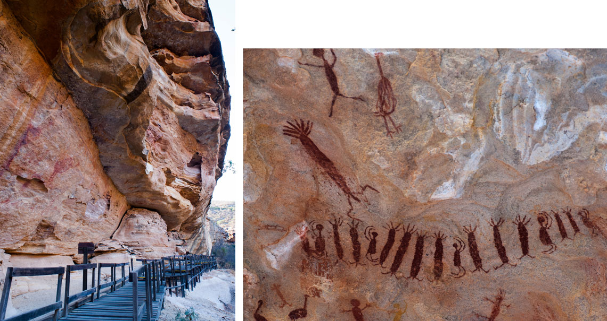

The glyph that may record a very large visitor
She argued that people were in the Americas far earlier than the textbooks of her time allowed. The argument is not settled. This chapter keeps apart what her sources agree on and what they dispute, then asks the older question behind it: who first lived outside Africa, and how people and lineages come to be connected or cut off from each other.
ch-guidon-verify.py checks arithmetic on the cited numbers and the connection graph in section 8; it
cannot check any archaeology. Nothing here is a ruling on who was right.
Born 12 March 1933 in Jaú, São Paulo state; died 4 June 2025, aged 92, at home in São Raimundo Nonato, Piauí, and buried in the yard beside the headquarters of the foundation she founded (FAPESP). She graduated in natural history at the University of São Paulo in 1959, took a specialisation course in prehistoric archaeology in Paris in 1961–62, and left Brazil in 1964 after the military coup, when, in her own later account as FAPESP renders it, an officer denounced her. She took her doctorate at the Sorbonne in 1975. Wikipedia names her supervisors as André Leroi-Gourhan and Annette Laming-Emperaire. FAPESP says she joined the first Franco-Brazilian mission in 1973 as Laming-Emperaire’s assistant. Piauí was not on Laming-Emperaire’s itinerary, which centred on Lagoa Santa near Belo Horizonte, and FAPESP says Guidon, who by its account had no interest in looking for the oldest human in the Americas, struck a deal: she would organise the Lagoa Santa expedition if she could see the rock art of Serra da Capivara. On that first trip she found 55 sites with paintings.
The Serra da Capivara National Park was created in 1979 and the Museum of the American Man foundation, FUMDHAM, in 1986; both sources give those years, and the park was listed by UNESCO in 1991. The verifier checks the order of those dates and that 1933 to 4 June 2025 is 92 years.
| Point | One source | Another source |
|---|---|---|
| Sites in the region | “more than 800”, per Wikipedia | “more than 1,200”, per FAPESP |
| Led FUMDHAM until | 2020, per Wikipedia | 2019, then honorary president, per FAPESP |
| Settled in São Raimundo Nonato | 1990, per Wikipedia | 1993, per FAPESP |
| Early employer in São Paulo | Ipiranga Museum, per Wikipedia | Museu Paulista, per FAPESP |
The chapter does not reconcile these. They matter only as a reminder that even the biography rests on pages that differ in the details.

The photograph is here for the art, not as evidence of an age. That the paintings, or the people behind them, could be older than is currently known is the author’s conjecture; it is the same question the next two sections report as open, and nothing in the caption’s source dates this panel.
In 1986 Guidon and G. Delibrias published a short paper in Nature with a title claiming radiocarbon dates put people in the Americas 32,000 years ago, from hearths and artifacts at Pedra Furada (Wikipedia). The charcoal dates cited range from about 32,000 to 48,000 years before present, and Wikipedia says repeated analysis by her side pushed the upper end toward 60,000. Across her career she gave 50,000 or 100,000 years (FAPESP), and in a 2014 newspaper interview, quoted by Wikipedia, she suggested the first settlers might have arrived by boat from Africa. All of that is her side’s claim. It is not independent confirmation.
The sources name four objections. Charcoal could come from natural fires (Tom Dillehay, 1994, per Wikipedia; Guidon replied that it did not). The “tools” could be rocks that broke after falling from the cliff (James Adovasio; Gary Haynes made the same point about a different site). Wild capuchin monkeys have been observed flaking stones (a 2016 Nature paper, per Wikipedia), which Stuart Fiedel raised in the same context. And Michael Waters noted that there is no genetic evidence for the Africa-by-boat idea. On the other side, Jacques Pelegrin is quoted as finding a purely natural origin “very unlikely” given continuous human presence. Eduardo Góes Neves, in the FAPESP obituary, is more measured: later work confirmed sites more than 20,000 years old, whether there were older occupations “is an open question,” and the oldest human skeleton in the park is about 10,000 years old.
A separate site gives a different kind of evidence. Human footprints at White Sands, New Mexico, were dated in 2021 to about 21,000–23,000 years ago by radiocarbon on seeds of an aquatic plant. Critics said such seeds can carry old carbon and look older than they are, and argued for 15,000 to 17,000 years. In 2023 a second team dated conifer pollen from the same layers (calibrated ages 23.4 ± 2.5 and 22.6 ± 2.3 thousand years) and used optically stimulated luminescence, which gave a minimum of 21.5 ± 1.9. In 2025 a third group radiocarbon-dated lake-bed mud at an independent laboratory and got 20.7–22.4. Its report counts 55 mutually consistent dates across three kinds of material. The same report says critics have asked since 2021 why no artifacts or camps are found with the tracks, and that this study does not answer them.
| Material, year | Reported (thousand years) | As an interval |
|---|---|---|
| Seeds, 2021 | 21–23 | [21.0, 23.0] |
| Pollen, 2023 | 23.4 ± 2.5; 22.6 ± 2.3 | [20.9, 25.9]; [20.3, 24.9] |
| Luminescence, 2023 | minimum 21.5 ± 1.9 | at least 19.6 |
| Lake mud, 2025 | 20.7–22.4 | [20.7, 22.4] |
| Critics’ figure | 15–17 | [15.0, 17.0] |
The verifier reads these as plain intervals and finds the first four share the range 21.0 to 22.4 thousand years, and that adding the critics’ 15–17 empties it. That is interval overlap, not a statistical combination; the luminescence figure is a minimum, so only its lower end is used. What the overlap says is narrow: three different materials point to the same range, and no published refutation turned up in the pages read. It does not say the footprints are the earliest presence, and the commentator Paulette Steeves, quoted by PopSci, says as much.
The older question is about apes, not people. Becoming Human says a land bridge joined Africa and the Arabian peninsula by about 17 million years ago, and that the first apes outside Africa appear in Germany and Turkey soon after, then spread across Europe and into Asia. A 2011 Gizmodo report describes a molar from southwest Germany dated by magnetostratigraphy to 17 or 17.1 million years ago, “quite possibly” the oldest ape ancestor found outside Africa, and likely an evolutionary dead end. Europe’s apes lasted from about 16 to 7 million years ago, a span of nine million years, and were extinct there by about 7; Asia kept lineages that gave the gibbons and the orangutans.
The orangutan is the Asian great ape, and the reading offered for this chapter, the first explorer, is reasonable with one gap. Wikipedia’s Orangutan page puts the split of the orangutan lineage from the African-ape lineage at 19.3 to 15.7 million years ago by molecular evidence; its Hominidae page gives about 12 million. The sources disagree, and the verifier shows the two figures do not overlap (12 is 3.7 below 15.7). Fossil relatives are in Asia: Sivapithecus from 12.5 to 8.5 million years in the Siwalik Hills of India and Pakistan, and Khoratpithecus in Thailand and Myanmar, whose species K. piriyai is called the closest known fossil relative of living orangutans. But the Sivapithecus link is disputed (a 2003 paper said its teeth and skeleton do not confirm it), and none of the pages places the 17-million-year German molar in the orangutan lineage. So the sources support “the orangutan lineage branched earliest among living great apes and has lived only in Asia.” They do not show that its ancestors were the first apes to cross out of Africa.
Within Asia the orangutans themselves split. The Sumatran and Bornean lineages diverged 4.9 to 2.9 million years ago by one analysis, about 0.4 million by another, and 3.4 million by a 2017 genome study, which also separated a third species, the Tapanuli orangutan. The three estimates have no common value; the verifier confirms that.
The sources give a spread, not a single date. A 2018 study claims stone artifacts at Shangchen in China as early as 2.12 million years ago, a claim the Wikipedia lead hedges as possible; the oldest human skeletal remains outside Africa are from Dmanisi, Georgia, dated 1.8 million, classed as Homo erectus georgicus; Ubeidiya in Israel has early Acheulean tools at 1.4 million; Sangiran on Java is 1.66 million. Modern humans emerge in Africa before about 0.3 million years ago, and Wikipedia says their earliest presence in West Asia may date to 0.3–0.2 million, with 0.13 ascertained, and that a later wave 70,000 to 50,000 years ago accounts for most non-African ancestry. Wikipedia also marks several of these as disputed (Pirro Nord, Ain Hanech); this chapter does not use those.
Against that, 22,000 years in the Americas is 1.2% of the time since Dmanisi and 1.0% of the time since Shangchen (the verifier computes both). People reached the Americas very late in the story of leaving Africa, by whichever route.
Reading the sources for who worked with whom, and who disputed whom, gives a small graph. The nodes are the 25 people the sources name in these roles. The edges are only ones a source states: the ten authors of the 2013 Toca da Tira Peia paper (as Wikipedia’s reference list gives them); Guidon with Delibrias on the 1986 paper; her two mentors; five others who appear with her in a 2002 interview; and the three authors of the 1994 critique (Meltzer, Adovasio, Dillehay). Dispute edges run from six critics to Guidon.
| Edges used | Components | What they are |
|---|---|---|
| Collaboration only | 6 | Guidon’s cluster; the three-author 1994 critique; and Fiedel, Haynes, Waters and Pelegrin alone |
| Collaboration + six dispute edges | 2 | everyone but Pelegrin joins Guidon’s component |
Disagreement connects people as surely as co-authorship does; the critics are tied to her by the claim they contest and are otherwise separate. A missing edge means only that these sources do not state one. Dropping the two mentor edges changes the count from 6 to 8 in the verifier’s control, so they are carrying weight.
The author’s remark is that geographic separation between the Americas and Eurasia made the contact that came later all the more painful. The sources support the direction of that, with limits. Wikipedia’s Columbian exchange page says the peoples of the Americas had had no exposure to Old World diseases and little or no immunity to them, and names smallpox, measles, influenza, typhus, plague and others. It dates swine influenza among the Taíno to 1493, the first recorded smallpox in the Americas to 1518, and puts the smallpox death toll at about 40% of Tenochtitlan’s people in 1520. It gives an 80–95% decline in the Indigenous population within 100–150 years of 1492, with Mexico falling from about 20 million to barely more than a million and Peru from about 9 million to 600,000 by 1620. The verifier recomputes those two as about 95% and 93%, inside the stated range.
Two cautions come from Wikipedia’s page on the population history of Indigenous peoples. The pre-contact total itself is uncertain, with estimates from 8 to 100 million and most newer ones between 45 and 60 million, and a 2020 genetic study suggests Caribbean estimates may have been at least tenfold too large. And disease was not the only cause named: war, forced removal and the disruption of societies are listed too, and scholars still dispute how much each contributed. The exchange also ran the other way: the origin of syphilis in Europe is called a subject of debate between a Caribbean source and an unrecognised earlier presence. So “all the more painful” is a fair summary of the direction, and the share owed to separation alone is not something these pages settle.
A smaller contact came earlier. Wikipedia reports a 2021 tree-ring study (Kuitems, Wallace and others, in Nature) that ties the felling of trees at L’Anse aux Meadows, Newfoundland, to the year 1021 by way of the carbon-14 spike of 993; earlier radiocarbon work had given 990–1050. So the Norse crossing of about the year 1000 is dated, 28 years after the spike and 471 before 1492 (the verifier checks the sums and that 1021 sits inside the earlier range). The site was small, eight buildings, with occupation estimated at perhaps 20 years, though a 2019 study allows up to a century, and it was abandoned. The sagas describe fights with the people the Norse called Skrælings, which Wikipedia says led them to give up the effort; Norse and Thule artifacts were exchanged, but Norse material is absent from mainland Labrador sites, which suggests little trade. The pages read mention no epidemic in this contact, and their silence is not evidence that there was none. Whether L’Anse aux Meadows is the saga’s Vinland is disputed. The contrast with 1492 is one of scale and staying power, and these pages do not say how much of it separation explains.
ch-guidon-verify.py runs 24 checks, 5 of them controls: the life-date arithmetic; the White Sands
intervals and their overlap (and that the critics’ interval breaks it); the Toca da Tira Peia counts; the scale
ratios; that the orangutan and Sumatra/Borneo estimates disagree as numbers; and the graph in section 8; and the post-contact and Norse-contact figures in section 9. It does not
date anything, assess any method, or decide any of the disputes.